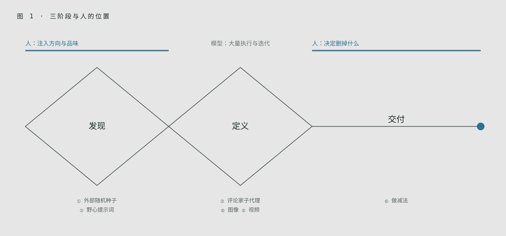
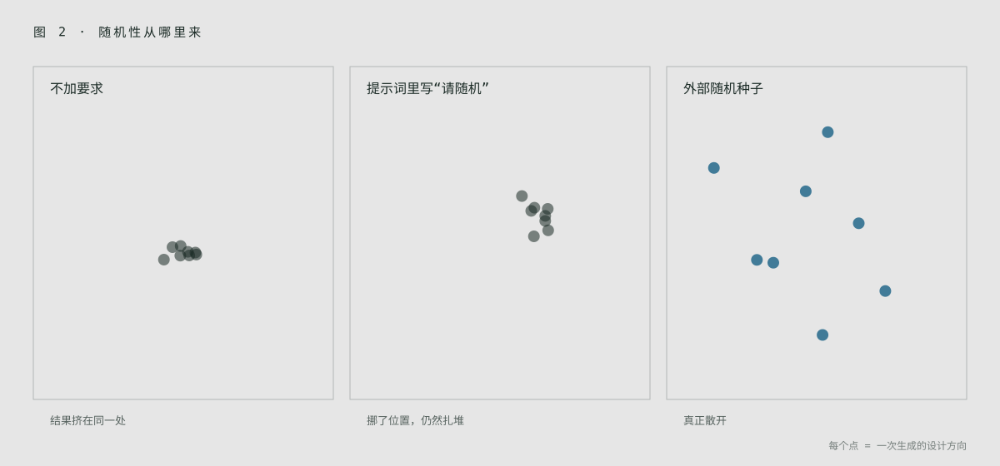
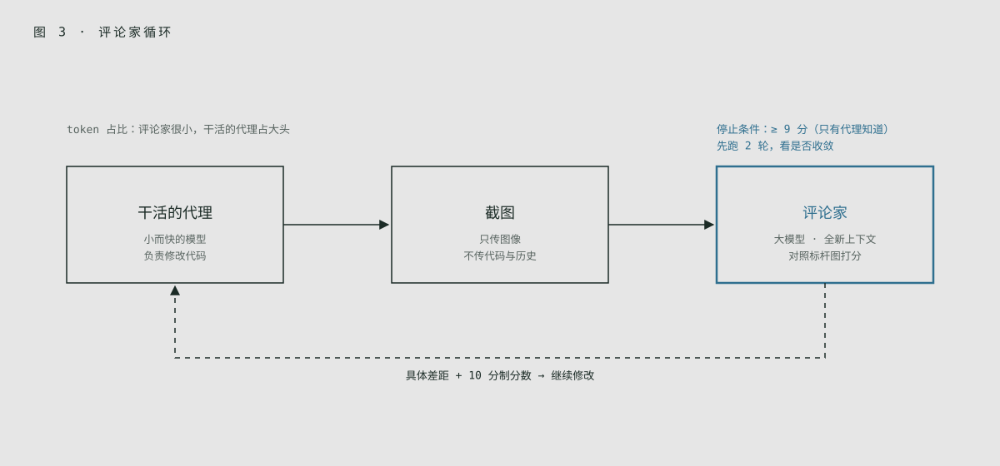
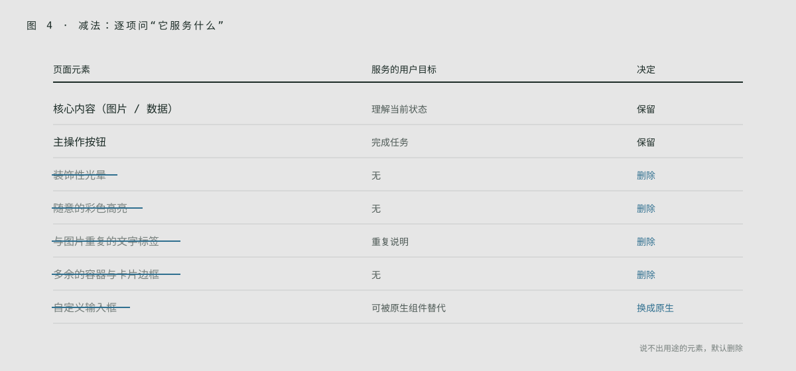

深度精讲：这不是译文，而是编者按设计师视角重写的讲解，结构、例子、表格和模板都是编者自己的。原文是 Lenny's Newsletter 的付费文章，本篇只依据公开可见的部分（前 6 个技巧）写成；付费墙后若还有内容，本篇未覆盖。原文大量依赖演示视频和前后对比图，下文在相应位置用文字说明，并标注「原文配图见原文」。
01 三句话读懂这篇
第一，AI 的平庸是训练方式决定的。作者 Anshu Chimala 在 Apple 带过 12 年面向未来 AI 产品的研发设计团队。他认为大模型每做一个设计决定，都在选“最能让所有人满意”的那个选项，结果就是一份标准的“委员会设计”（design-by-committee）。
第二，解法是一套流程，而不是一句神奇提示词。他借用设计界熟悉的双钻模型（Double Diamond），改造成给“AI 设计团队”用的三阶段：发现、定义、交付，每个阶段配具体技巧。
第三，人的位置没有消失，而是移到了两端。开头由你注入方向和品味，结尾由你决定删掉什么。中间的大量执行和迭代交给模型。
02 病因：为什么 AI 设计像“委员会决议”
作者的解释和上一篇 Anthropic 讲的“分布收敛”是同一件事，只是换了个角度：大模型逐个 token 生成设计，每遇到“用什么颜色”“元素怎么排”这类决定，就选概率最高、最不会出错的那个。再加上人类反馈训练进一步奖励“大家都觉得还行”的答案，最后的作品就像一群人开会妥协出来的方案：没人反对，也没人记得。
而好的设计恰恰相反：从情绪出发，敢于打破规则，用意料之外的选择取悦用户。作者的判断是，模型并非没有创造力，只是默认状态下只用到了大约 1%。
“委员会设计”这个比喻对资深设计师很好用：你在大公司里一定见过，方案越过越多人的手，棱角就越被磨平。AI 等于把这个过程压缩到了每一个 token。所以对付 AI 的办法，和对付委员会的办法很像：要有一个强势的创意总监（你），以及一套保护大胆想法不被磨平的流程。
03 总框架：给 AI 团队用的双钻模型
作者在 Apple 管理人类设计师时学到，团队对“界面应该长什么样”的成见，会让大家反复回到老路。他们靠严格的流程逼自己去“可能性的边缘”找新东西，再把细节打磨到 Apple 的水准。现在他把同一套方法用在 AI 身上：
| 阶段 | 目标 | 技巧 | 人的角色 |
|---|---|---|---|
| 发现 Discover | 跳出平均值，探索足够多的方向 | ① 种子字符串注入随机性；② 野心十足的提示词 | 提供灵感来源，挑方向 |
| 定义 Define | 给选中的方向一个独特的个性 | ③ 设计评论家子代理；④ 图像生成；⑤ 视频生成 | 设定评判标准和参考 |
| 交付 Deliver | 打磨，删掉不必要的东西 | ⑥ 删掉不增值的元素 | 最终取舍 |

04 发现 ①：从模型外部引入随机性
作者做了一个很有说服力的对照实验，编者把它概括成三轮：
| 轮次 | 提示方式 | 结果 |
|---|---|---|
| 第一轮 | 只说“给我的效率工具做个落地页” | 几乎每次都是紫色渐变、左文右图、同一个结构 |
| 第二轮 | 加一句“要完全独特，每个设计决定都随机” | 看起来不同了，但几次之间依然雷同，连用的比喻都一样（原文举的是反复出现的陶艺意象） |
| 第三轮 | 让模型先用脚本生成一串随机字符，再从中“读出”配色、版式、字体方向 | 每次结果明显不同，真正一次一个样 |
原文配图见原文：三轮各有四个并排截图，直观展示雷同与差异。

关键在于第二轮为什么失败：模型无法“真的随机”，它只会预测“听起来像随机”的词。随机性必须从模型外部来。作者引用的是 Sakana AI 发表的 String Seed of Thought 方法：用脚本生成的随机串当灵感种子，让模型从中找子模式、特殊数字之类的线索，再据此定创意方向，同时要求种子本身不出现在设计里。
编者例子：这其实很像设计师常用的“随机词卡”或“抽一张杂志页”练习。区别在于，人类设计师抽到卡片后会主动联想，而模型需要你明确命令它“从这串字符里推导方向”。你也可以把种子换成更有设计感的外部输入：一张随机博物馆藏品图、一个随机城市的街景色、当天的天气数据。
这个技巧最适合发散阶段做“方向墙”：一次跑 6–8 个版本，像做情绪板一样挑出能打动你的两三个。但别指望种子能直接给出好设计，它只负责把模型推离中心，真正的选择还是你来做。
05 发现 ②：把提示词写得野心十足
第二种推力是给模型一个具体又大胆的愿景，让它的每个决定都有依据，而不是临场随便选。作者的方法是先在脑中想象一个灵感来源，比如某种电子游戏的画面、某个室内设计潮流、一件装置艺术，再描述你希望它怎样影响页面。原文举了像素游戏、等距视角立体城市、刻意不对称和不和谐配色等几个方向。
难点在于想出原创点子。直接问 AI 要点子，只会得到所有人都会得到的平均点子。作者的三步法，编者整理如下：
| 步骤 | 你做什么 | 要点 |
|---|---|---|
| 1. 广撒网 | 让 AI 列出大量设计语言方向，每条只写一句 | 要广不要深，目的只是激发你的想象 |
| 2. 带着品味收窄 | 挑出喜欢的，写下你的真实反应：喜欢什么、讨厌什么、怕它变俗在哪 | 这一步注入的是你独有的判断，是作品唯一性的来源 |
| 3. 让 AI 写构建提示词 | 满意后，让 AI 把方向整理成一段简洁的构建提示词 | 再交给编码代理做第一版 |
原文第二步的例子是“工业控制面板”方向：作者想要触感、按键反馈和声音，但排斥卡通化或过度拟物（skeuomorphic），担心灰色渐变太无聊，希望加质感和一点颜色。这正是设计师在评审会上会说的话。
作者还有两条心态建议：听起来“肯定不行”的点子反而值得试，模型常常会超出预期；失败的提示词别扔，换新模型时再跑一次，用来检验新模型的能力边界。
对 Zhu 最有价值的就是第二步。你多年的设计经验，本质上就是一大堆“我喜欢 / 我讨厌 / 这样会俗”的判断。把这些判断写进收窄环节，结果才会是只有你做得出来的东西。建议把每次写下的反应存进一个“品味笔记”，积累久了，就能直接整理成你自己的 SKILL.md。
06 定义 ③：请一位“设计评论家”
到这一步，初稿通常已有潜力，但还残留老套路：顶部导航、左文右按钮、右侧配图。原文配图见原文。
直接让同一个代理“看看再改好”效果很差，因为它在审自己的代码、自己的决定，无法跳出来看全局。作者的解法是分工：编码代理负责改，另起一个独立的“设计评论家”子代理（subagent）负责打分。评论家每轮只看当前截图，不看代码、不看实现过程、也不看之前的评论，只判断是否达到质量线。
评论家的工作方式可以概括为四点：先判断设计想要的美学方向；想象顶级设计工作室会如何把这个方向做到极致；指出最大的差距；给出 10 分制分数。另外要求它兼顾整体构图和细节，对“一看就是 AI 做的”套路扣分，反馈具体不空泛，敢下判断。编码代理要一直迭代到评论家独立打出 9 分以上，但这个及格线不告诉评论家，以免影响它打分的客观性。
成本上也划算：评论家用大而贵的模型，干活的用便宜快速的模型。作者提到，在他的例子里评论家只占不到 10% 的输出 token，比让大模型直接重做便宜一半，也快得多。原文配图见原文：几个页面迭代前后对比，各自形成了独立个性，同时保留了最初的美学方向。
原文对评判标准的写法给出了三档，编者整理为：
| 档次 | 评判方式 | 问题 |
|---|---|---|
| 差 | “判断我们的设计是否好看、是否不像 AI 做的” | 太主观，每次结果差异很大 |
| 可以 | “先想象顶级工作室怎么做这个美学，再拿我们的设计对比” | 仍偏模糊，但至少给了一致的框架和标准 |
| 很好 | 给几张专业作品截图和一张我们的截图，让它按精致度和品味排序 | 具体、客观，有视觉基准 |

其他要点：给评论家参考图时，说明是情绪板（moodboard），不是要照抄的目标；停止条件要谨慎，否则评论家永远不满意，代理会一直烧 token，建议先跑一两轮看是否收敛；评论家用更大的模型（参数多通常意味着更好的设计感和更宽的想法分布），干活的模型可以小一些，但不能小到执行不好。
这就是把设计评审（design critique）流程化。资深设计师可以在这里发挥大作用：把你们团队真正的评审标准写进评论家提示词，比如“视觉焦点是否唯一”“信息层级是否三层以内”“是否出现无意义装饰”。再加上“与 4 张标杆截图排序”的方法，评论家就有了可靠的锚点。
一个提醒：评论家只看截图，所以它评不了交互、无障碍和真实内容下的表现。这些仍然要你自己看。
07 定义 ④⑤：图像与视频生成
④ 用生成图像丰富设计
编码代理爱写代码、不爱用图片，于是总用渐变、几何形状、简单图案凑视觉，这本身就是 AI 设计的明显特征。作者的建议是明确要求代理用图像生成（可以再配合着色器 shader 或 3D 效果），并在浏览器里逐帧检查效果。原文配图见原文：加入生成图像前后的页面对比。
接入方式按工具分三类：自带图像生成的代理（原文列举了 Codex、Antigravity、Grok Build），直接叫它用即可，它通常不会主动用；用 Claude Code 但有 ChatGPT 订阅，可以让代理调用 Codex CLI 走订阅额度；其他情况就给代理一个 OpenAI 或 Gemini 的 API key。
关于 key 的安全，作者的建议很实在：单独建一个限额很低的 key 专给代理用，泄露或被滥用也损失有限、随时可撤销；把 key 放进被 git 忽略的本地文件，并在 AGENTS.md / CLAUDE.md 里注明只限开发时使用、绝不能打包进产品。
⑤ 用视频生成做高级动效
作者推荐通过 fal.ai 这类聚合平台接入视频模型，一个 key 就能让代理自己比较、挑选合适的模型。两种用法：
| 用法 | 做法 | 效果 |
|---|---|---|
| 动态图形 | 生成纯色背景的循环视频，再抠掉背景（简单的用色键 chroma key，复杂的用视频抠像 video matting 模型） | 得到能叠在任何界面上、不像视频的动画。原文例子是一块碎裂旋转的水晶，带折射和焦散光效；为了让折射可信，先在页面底色上渲染再抠像 |
| 状态之间的流畅过渡 | 给两张产品静帧，让视频模型插帧生成过渡片段；用户操作时播放，或随滚动、手势逐帧拖动 | 原文例子是一只行李箱：从空中落地、打开、物品落入，随滚动连续播放，用上一段最后一帧作为下一段起点保证衔接 |
原文配图见原文：水晶动效与行李箱滚动演示均为视频。
这两项对 UX 设计师的意义在于：以前需要动效设计师和 3D 师才能做的“品牌时刻”，现在一个人就能做原型。但要警惕新俗套：生成的 3D 水晶、玻璃质感很快会成为下一个紫色渐变。用之前先问一句：这个画面和我的产品故事有什么关系？
另外，视频方案要考虑加载体积、低端设备性能和“减少动态效果”（prefers-reduced-motion）设置，这些模型不会替你想。
08 交付 ⑥：做减法
AI 很爱加东西，几乎不会主动删。过度解释、没有实际作用的元素，是 AI 设计最明显的标志之一；而克制的设计会立刻显得高级。作者说他打磨 AI 设计时，大部分精力都花在删东西上。
他的例子是自己做的卡路里记录 App。即使明确要了“干净、极简”，初版还是有这些问题：背景和进度条上的粉色光晕；文字上随意的颜色和高亮；食物图片已经说明问题了，却还多了标签和空白；自定义按钮和输入框不如 iOS 原生组件好看。他让模型改成以图片为中心的网格，去掉渐变、光晕和多余容器，做出真正贴近 Apple 原生的极简风格。结果：用原生组件、去掉多余色彩、文字更小更紧凑，让视觉本身说话。原文配图见原文：改版前后的 App 截图。

作者的观察是：删减设计、删代码对模型来说是“冒险”，而模型不爱冒险，所以这一步必须由人推动。
“AI loves to add more, but it rarely takes away.” — Anshu Chimala
这一节和 Anthropic frontend-design skill 里引用的 Chanel 那句“出门前照镜子，摘掉一件饰品”是同一个意思。对设计师来说，减法其实是最能体现资历的地方。可以把常见的 AI 多余元素做成一张固定的“删除清单”，每次交付前过一遍（见第 10 节）。
09 对照表与工作流模板
| 环节 | 常见做法（容易得到平庸结果） | 本文做法 |
|---|---|---|
| 要多样性 | 在提示词里写“要随机、要独特” | 用脚本生成外部随机种子，让模型从中推导方向 |
| 找方向 | 直接让 AI 出点子并照用 | AI 广撒网，你带着品味收窄，再让 AI 写构建提示词 |
| 迭代 | 让同一个代理自己检查、自己改 | 独立的评论家子代理只看截图打分，干活的代理改到 9 分以上 |
| 评判标准 | “好不好看”“像不像 AI” | 与几张标杆截图排序，或对照“顶级工作室会怎么做” |
| 视觉素材 | 渐变、几何形状、CSS 图案 | 生成图像，配合 shader / 3D |
| 动效 | CSS 淡入淡出 | 视频生成 + 抠像，或插帧做状态过渡 |
| 收尾 | 继续加功能和装饰 | 逐项删除不增值的元素，优先原生组件 |
下面是编者按本文思路写的一份工作流提示词模板，可直接改用（不是原文提示词）：
【阶段一：发散】 任务：为 [产品] 的 [页面] 生成 6 个差异明显的设计方向。 每个方向开始前： 1. 用 shell 生成一段 40 位随机字符串（不要在设计里出现它）； 2. 从字符串里找出数字、重复字母、节奏等线索，推导出配色、版式、字体、母题； 3. 用一句话写下这个方向的「气质」，再动手做。 我的品味约束：[例如：不要卡通化；不要灰色渐变；要有触感] 【阶段二：评审循环】 每轮：截图 → 在全新上下文中调用评论家，只给截图和以下 4 张标杆图。 评论家任务：说出这个设计追求的美学；想象顶级工作室怎么做； 列出最大的 3 个差距（具体到元素）；对明显的 AI 套路扣分； 把 5 张图按精致度排序并给本设计打 10 分制分数。 先跑 2 轮，看分数是否收敛，再决定是否继续。 【阶段三：减法】 列出页面上每个元素，标注它服务的用户目标； 删除所有说不出用途的元素、装饰性光晕和渐变、重复的标签； 能用平台原生组件的地方不用自定义组件。
10 自查清单
- 发散阶段是否至少看过 6 个真正不同的方向，而不是同一结构换颜色？
- 随机性是否来自模型外部（种子、外部素材），而不是一句“请随机”？
- 选中的方向里，是否写进了你自己的“喜欢 / 讨厌 / 怕变俗”的判断？
- 评审是否由独立上下文的评论家完成，而不是让干活的代理自我评价？
- 评论家是否有具体的视觉基准（标杆截图）和明确的停止条件？
- 页面上是否还有用渐变、几何形状凑数的地方，可以换成真正的图像或动效？
- 新加的图像和动效是否和产品故事有关，而不是另一种新俗套？
- 是否检查了加载体积、性能和“减少动态效果”设置？
- 是否删掉了所有说不出用途的元素：光晕、随意高亮、重复标签、多余容器？
- 能用原生组件的地方是否都用了？
- API key 是否单独限额、放在被 git 忽略的文件里，没有进入产品代码？
和上一篇对照着看：Anthropic 的 skill 解决的是“第一稿别太平庸”，这篇解决的是“怎样用流程把一个方向做深、做精”。前者像设计规范，后者像团队工作流。给 Zhu 的建议：用一个真实项目把三个阶段完整跑一遍，记录每个阶段你花的时间和做的判断。你会发现，时间主要花在第二步的收窄和最后的减法上，而那正是你作为资深设计师最难被替代的部分。